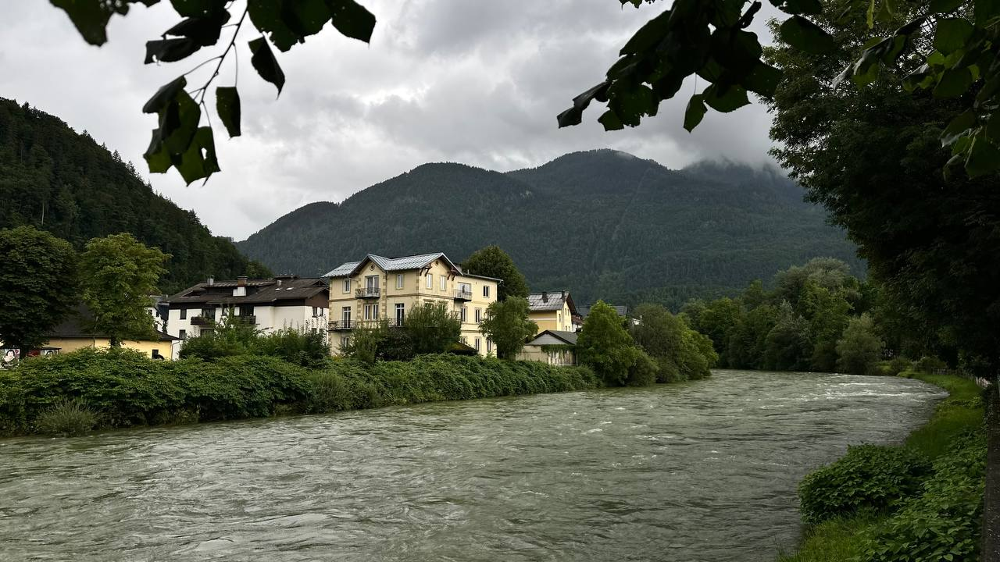
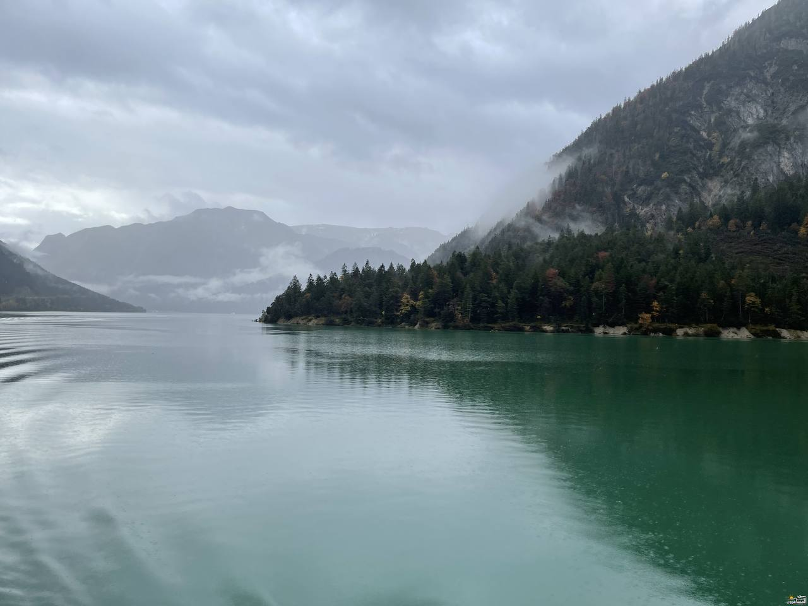
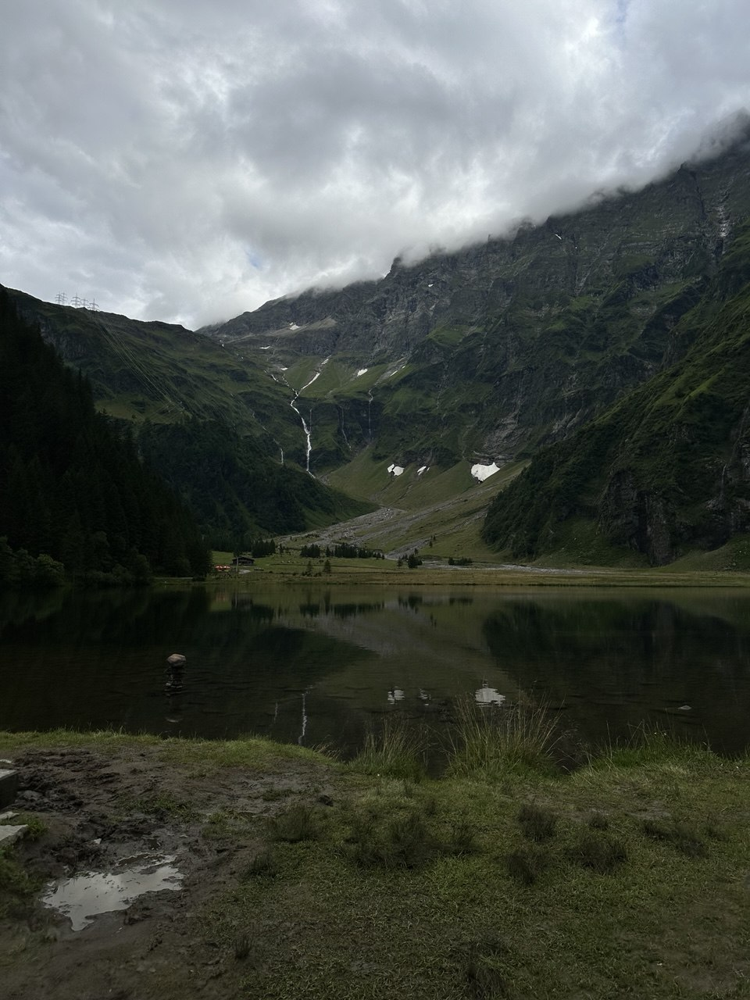
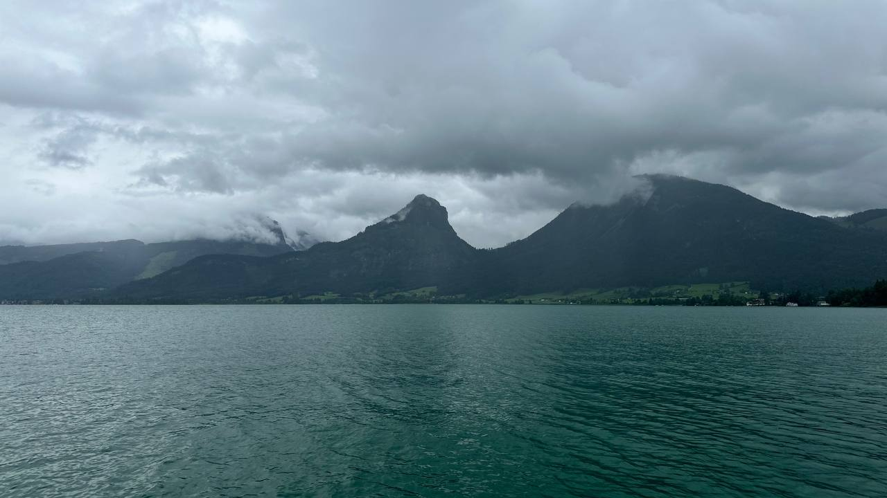
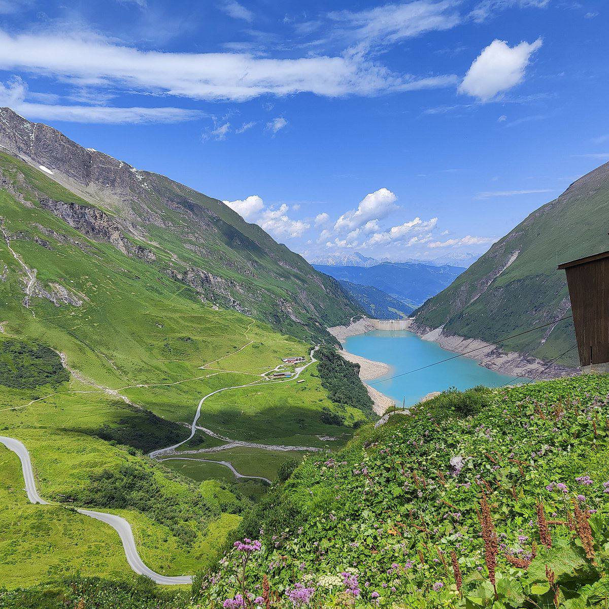
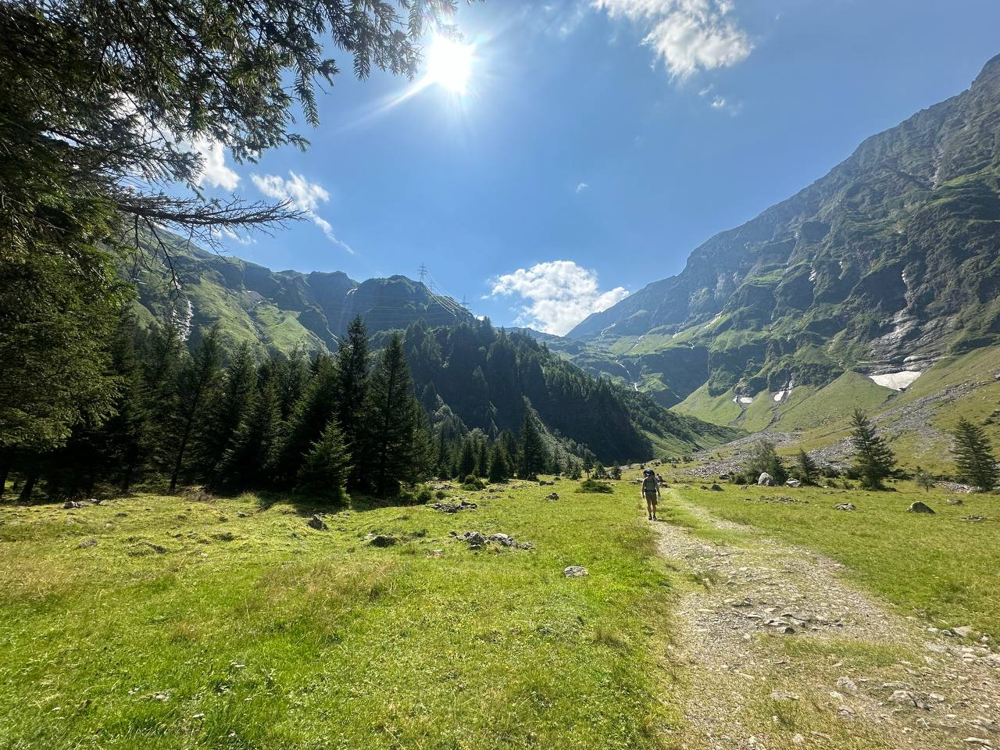
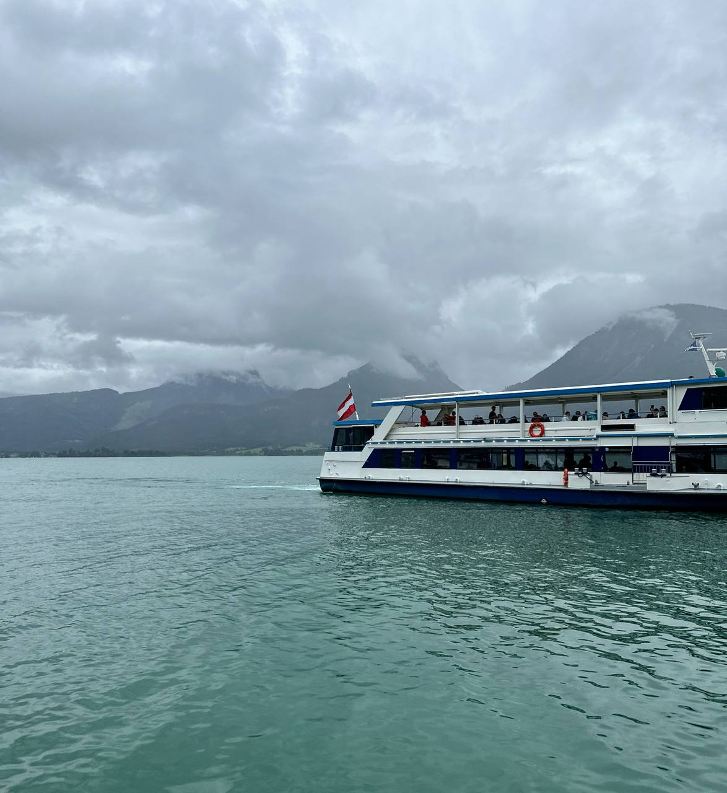
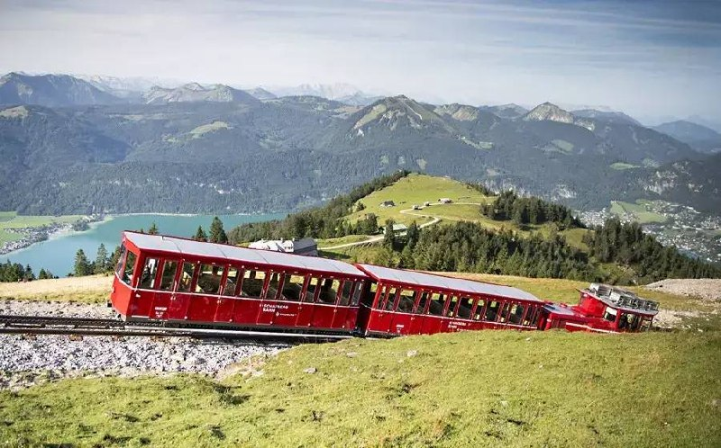
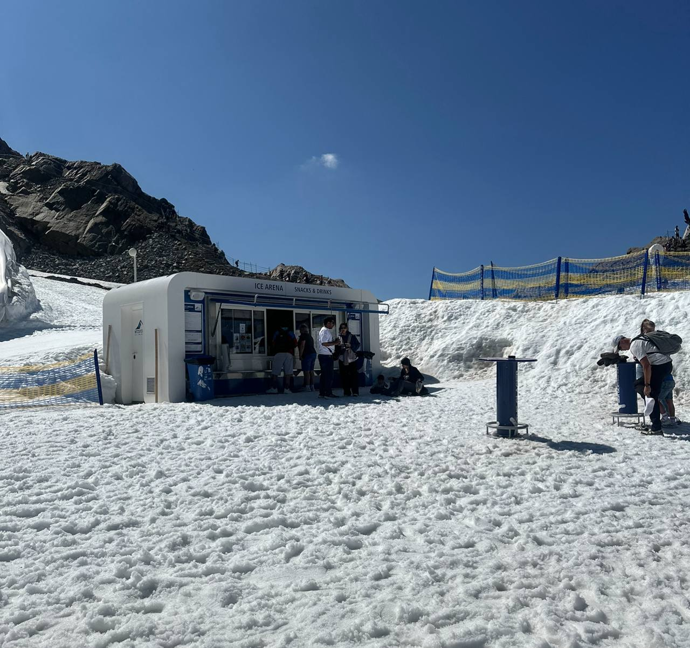

Austria is a beautiful destination known for its stunning nature, very clean environment, and peaceful atmosphere. It is a great destination for families and nature lovers.
One of the best things about Austria is that you can visit it again and again without ever getting bored. Every trip can offer a different experience, with new places, lakes, mountains, and activities to discover.

Achensee is a beautiful lake surrounded by mountains and amazing natural views.

Hintersee is a peaceful and picturesque lake surrounded by beautiful nature.

Wolfgangsee is a stunning lake surrounded by charming villages and beautiful mountains.

The Kaprun reservoirs are surrounded by impressive mountains and offer breathtaking views.

Explore the beautiful Austrian mountains and enjoy the amazing natural scenery.

Take a boat ride and enjoy the beautiful views from the lakes.

Ride the famous steam train in Wolfgang and enjoy the beautiful mountain and lake views.

Visit Kitzsteinhorn in Kaprun and experience the snow, glaciers, and breathtaking mountain views.